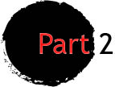
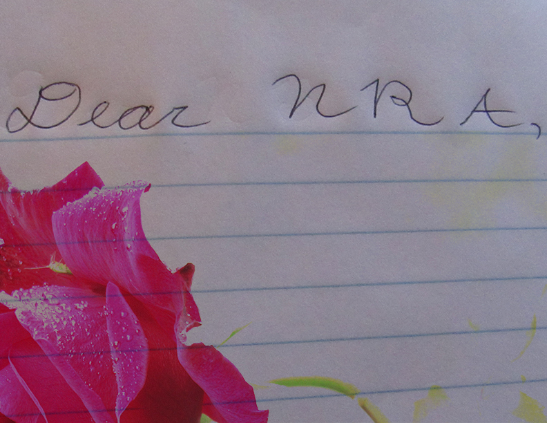

Information Page
Index



Part 1

I know that everytime people lose their lives to the “senseless” mass shootings,
we hear the words, “Thoughts and prayers.” Although we appreciate your condolences, I do have one burning question. When? Just when did those three words echo louder than our three words, “Enough is enough”?